C2. Univariate Modeling Techniques
If no package, need to install.packages(“fpp2”) and/or install.packages (“forecast”).
Forecast method: Simple exponential smoothing
Model Information:
Simple exponential smoothing
Call:
ses(y = est_part)
Smoothing parameters:
alpha = 0.9999
Initial states:
l = 21.3004
sigma: 2.0227
AIC AICc BIC
270.0030 270.5247 275.7391
Error measures:
ME RMSE MAE MPE MAPE MASE ACF1
Training set 1.542145 1.981825 1.558155 2.974211 3.045736 0.9800978 0.4849583
Forecasts:
Point Forecast Lo 80 Hi 80 Lo 95 Hi 95
2010 98.39994 95.80776 100.9921 94.43554 102.3643
2011 98.39994 94.73422 102.0657 92.79371 104.0062
2012 98.39994 93.91044 102.8894 91.53385 105.2660
2013 98.39994 93.21596 103.5839 90.47173 106.3282
2014 98.39994 92.60410 104.1958 89.53597 107.2639
2015 98.39994 92.05094 104.7489 88.68998 108.1099
2016 98.39994 91.54225 105.2576 87.91201 108.8879
2017 98.39994 91.06878 105.7311 87.18789 109.6120
2018 98.39994 90.62408 106.1758 86.50779 110.2921
2019 98.39994 90.20347 106.5964 85.86452 110.9354
Forecast method: Simple exponential smoothing
Model Information:
Simple exponential smoothing
Call:
ses(y = eva_part, alpha = 0.999)
Smoothing parameters:
alpha = 0.999
Initial states:
l = 100.002
sigma: 2.8618
AIC AICc BIC
62.50994 63.70994 63.63984
Error measures:
ME RMSE MAE MPE MAPE MASE ACF1
Training set 2.093929 2.632431 2.309504 1.825748 2.005296 0.9238016 0.007182097
Forecasts:
Point Forecast Lo 80 Hi 80 Lo 95 Hi 95
2023 127.1959 123.5284 130.8634 121.5870 132.8048
2024 127.1959 122.0119 132.3799 119.2676 135.1242
2025 127.1959 120.8479 133.5439 117.4874 136.9044
2026 127.1959 119.8664 134.5254 115.9864 138.4054
2027 127.1959 119.0017 135.3901 114.6640 139.7278
2028 127.1959 118.2199 136.1719 113.4683 140.9235
2029 127.1959 117.5010 136.8908 112.3688 142.0230
2030 127.1959 116.8318 137.5600 111.3453 143.0465
2031 127.1959 116.2032 138.1886 110.3840 144.0077
2032 127.1959 115.6087 138.7831 109.4749 144.9169
Forecast method: Simple exponential smoothing
Model Information:
Simple exponential smoothing
Call:
ses(y = cpits, alpha = 0.999)
Smoothing parameters:
alpha = 0.999
Initial states:
l = 21.3006
sigma: 2.1778
AIC AICc BIC
361.0556 361.2556 365.3418
Error measures:
ME RMSE MAE MPE MAPE MASE ACF1
Training set 1.682561 2.143001 1.739649 2.764705 2.858287 0.9850065 0.3882995
Forecasts:
Point Forecast Lo 80 Hi 80 Lo 95 Hi 95
2023 127.1959 124.4049 129.9869 122.9274 131.4644
2024 127.1959 123.2508 131.1410 121.1623 133.2295
2025 127.1959 122.3649 132.0269 119.8076 134.5842
2026 127.1959 121.6180 132.7738 118.6653 135.7265
2027 127.1959 120.9600 133.4318 117.6589 136.7329
2028 127.1959 120.3650 134.0268 116.7490 137.6428
2029 127.1959 119.8179 134.5739 115.9122 138.4796
2030 127.1959 119.3086 135.0832 115.1333 139.2585
2031 127.1959 118.8303 135.5615 114.4018 139.9900
2032 127.1959 118.3778 136.0140 113.7098 140.6819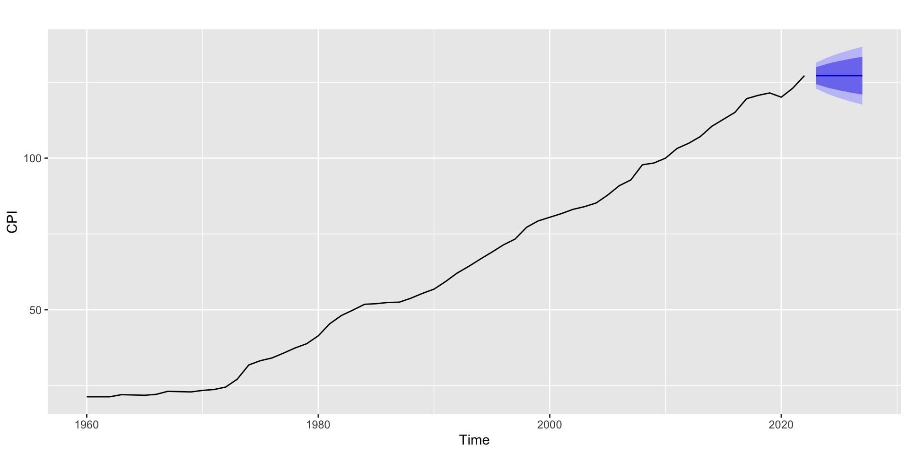
Forecast method: Holt's method
Model Information:
Holt's method
Call:
holt(y = est_part)
Smoothing parameters:
alpha = 0.9922
beta = 0.3708
Initial states:
l = 21.2128
b = -0.0636
sigma: 1.1718
AIC AICc BIC
217.2861 218.6498 226.8462
Error measures:
ME RMSE MAE MPE MAPE MASE ACF1
Training set 0.1243695 1.12395 0.8068117 0.4127585 1.756522 0.5074939 0.1005745
Forecasts:
Point Forecast Lo 80 Hi 80 Lo 95 Hi 95
2010 100.6626 99.16086 102.1643 98.36590 102.9593
2011 102.9050 100.36634 105.4436 99.02247 106.7875
2012 105.1474 101.51089 108.7839 99.58585 110.7089
2013 107.3898 102.57173 112.2078 100.02122 114.7583
2014 109.6322 103.54667 115.7176 100.32520 118.9391
2015 111.8745 104.43792 119.3112 100.50120 123.2479
2016 114.1169 105.24876 122.9851 100.55423 127.6796
2017 116.3593 105.98259 126.7361 100.48948 132.2292
2018 118.6017 106.64262 130.5608 100.31186 136.8916
2019 120.8441 107.23180 134.4564 100.02588 141.6624
Forecast method: Holt's method
Model Information:
Holt's method
Call:
holt(y = eva_part, alpha = 0.9922, beta = 0.3708)
Smoothing parameters:
alpha = 0.9922
beta = 0.3708
Initial states:
l = 97.4232
b = 2.5846
sigma: 2.0339
AIC AICc BIC
53.02336 55.69003 54.71821
Error measures:
ME RMSE MAE MPE MAPE MASE
Training set -0.02408487 1.692347 1.361851 -0.03265661 1.146471 0.5447402
ACF1
Training set 0.0400953
Forecasts:
Point Forecast Lo 80 Hi 80 Lo 95 Hi 95
2023 129.6481 127.0414 132.2547 125.6616 133.6345
2024 132.1166 127.7101 136.5230 125.3775 138.8557
2025 134.5851 128.2731 140.8971 124.9317 144.2384
2026 137.0536 128.6908 145.4164 124.2638 149.8433
2027 139.5221 128.9594 150.0847 123.3679 155.6763
2028 141.9906 129.0828 154.8983 122.2499 161.7313
2029 144.4591 129.0667 159.8515 120.9185 167.9997
2030 146.9276 128.9169 164.9383 119.3826 174.4726
2031 149.3961 128.6390 170.1532 117.6509 181.1414
2032 151.8646 128.2382 175.4911 115.7311 187.9982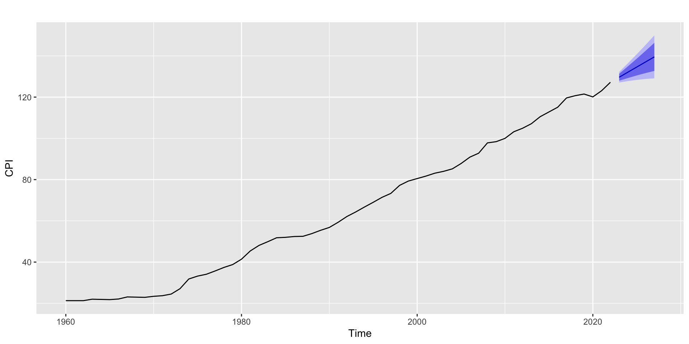
Forecast method: Holt-Winters' additive method
Model Information:
Holt-Winters' additive method
Call:
hw(y = est_elec)
Smoothing parameters:
alpha = 0.9253
beta = 4e-04
gamma = 1e-04
Initial states:
l = 102.4914
b = 0.1712
s = -0.233 -2.2881 3.3367 -0.561 3.7136 1.0978
-3.7209 3.5383 -0.1766 4.6854 -8.8695 -0.5228
sigma: 3.8523
AIC AICc BIC
631.3403 640.3403 673.0642
Error measures:
ME RMSE MAE MPE MAPE MASE
Training set 0.01529911 3.475488 2.522562 -0.03638605 2.255034 0.4535252
ACF1
Training set 0.06272114
Forecasts:
Point Forecast Lo 80 Hi 80 Lo 95 Hi 95
Mar 2022 123.3920 118.45517 128.3289 115.84175 130.9423
Apr 2022 118.7020 111.97466 125.4294 108.41339 128.9907
May 2022 122.5889 114.45510 130.7227 110.14932 135.0285
Jun 2022 115.5018 106.17037 124.8333 101.23060 129.7730
Jul 2022 120.4914 110.09866 130.8841 104.59708 136.3857
Aug 2022 123.2787 111.92278 134.6347 105.91130 140.6462
Sep 2022 119.1760 106.93167 131.4203 100.44993 137.9020
Oct 2022 123.2463 110.17328 136.3193 103.25285 143.2397
Nov 2022 117.7928 103.94001 131.6456 96.60677 138.9789
Dec 2022 120.0196 105.42804 134.6111 97.70374 142.3354
Jan 2023 119.9012 104.60604 135.1964 96.50927 143.2932
Feb 2023 111.7258 95.75746 127.6941 87.30434 136.1472
Mar 2023 125.4525 108.83772 142.0674 100.04236 150.8627
Apr 2023 120.7626 103.52511 138.0000 94.40016 147.1249
May 2023 124.6494 106.81062 142.4882 97.36734 151.9315
Jun 2023 117.5623 99.14137 135.9833 89.38991 145.7347
Jul 2023 122.5519 103.56620 141.5376 93.51579 151.5880
Aug 2023 125.3392 105.80473 144.8738 95.46378 155.2147
Sep 2023 121.2365 101.16772 141.3052 90.54397 151.9290
Oct 2023 125.3068 104.71729 145.8963 93.81787 156.7957
Nov 2023 119.8533 98.75553 140.9511 87.58704 152.1196
Dec 2023 122.0801 100.48560 143.6746 89.05417 155.1060
Jan 2024 121.9617 99.88133 144.0421 88.19268 155.7307
Feb 2024 113.7863 91.23011 136.3424 79.28959 148.2830
Forecast method: Holt-Winters' additive method
Model Information:
Holt-Winters' additive method
Call:
hw(y = eva_elec, alpha = 0.9253, beta = 4e-04, gamma = 1e-04)
Smoothing parameters:
alpha = 0.9253
beta = 4e-04
gamma = 1e-04
Initial states:
l = 123.0679
b = 0.2536
s = -11.5947 -3.1404 -1.8917 -2.8454 2.5155 -1.9169
3.9254 4.0507 1.2578 6.6851 -0.4693 3.4239
sigma: 2.9248
AIC AICc BIC
114.6408 174.6408 129.9154
Error measures:
ME RMSE MAE MPE MAPE MASE
Training set -0.008697317 1.527431 0.975001 -0.01625182 0.763524 0.2630737
ACF1
Training set -0.3535561
Forecasts:
Point Forecast Lo 80 Hi 80 Lo 95 Hi 95
Jan 2024 125.5687 121.8204 129.3170 119.8362 131.3012
Feb 2024 117.3679 112.2602 122.4757 109.5563 125.1795
Mar 2024 132.6400 126.4643 138.8157 123.1951 142.0849
Apr 2024 129.0003 121.9152 136.0855 118.1645 139.8361
May 2024 136.4082 128.5170 144.2993 124.3397 148.4766
Jun 2024 131.2344 122.6117 139.8571 118.0471 144.4217
Jul 2024 134.2809 124.9834 143.5783 120.0616 148.5001
Aug 2024 134.4090 124.4821 144.3360 119.2270 149.5910
Sep 2024 128.8202 118.3008 139.3396 112.7322 144.9082
Oct 2024 133.5062 122.4255 144.5868 116.5598 150.4525
Nov 2024 128.3987 116.7835 140.0140 110.6348 146.1627
Dec 2024 129.6059 117.4792 141.7326 111.0597 148.1521
Jan 2025 128.6108 115.9928 141.2288 109.3132 147.9083
Feb 2025 120.4099 107.3188 133.5011 100.3887 140.4311
Mar 2025 135.6820 122.1339 149.2302 114.9619 156.4022
Apr 2025 132.0424 118.0517 146.0330 110.6455 153.4393
May 2025 139.4502 125.0303 153.8702 117.3968 161.5036
Jun 2025 134.2764 119.4393 149.1136 111.5849 156.9679
Jul 2025 137.3229 122.0796 152.5662 114.0103 160.6355
Aug 2025 137.4511 121.8118 153.0903 113.5329 161.3692
Sep 2025 131.8622 115.8365 147.8880 107.3530 156.3715
Oct 2025 136.5482 120.1448 152.9516 111.4613 161.6351
Nov 2025 131.4408 114.6678 148.2137 105.7888 157.0928
Dec 2025 132.6479 115.5131 149.7827 106.4425 158.8533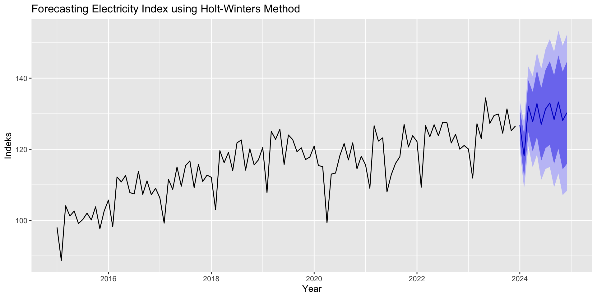
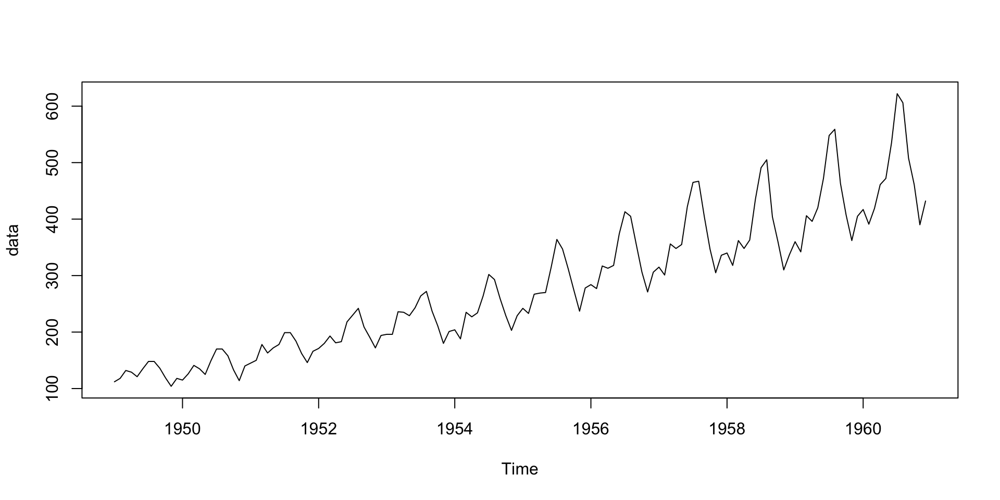
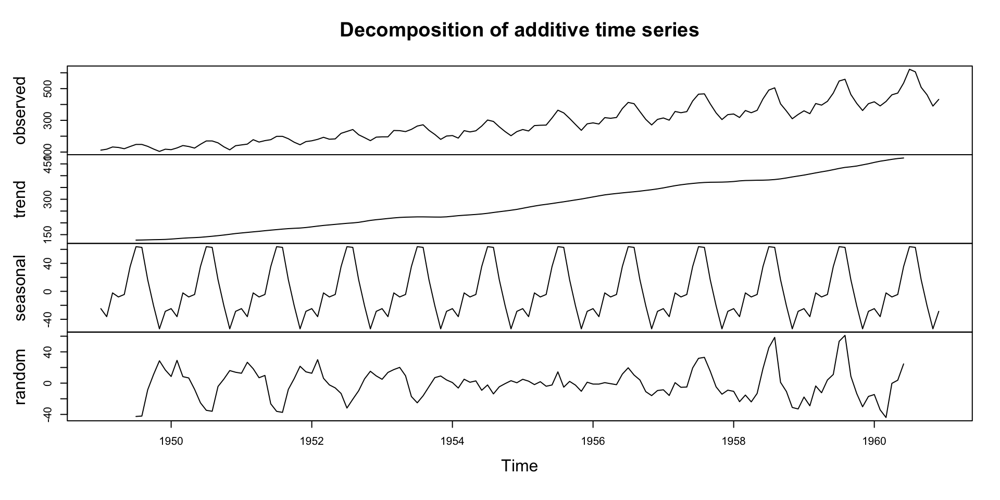
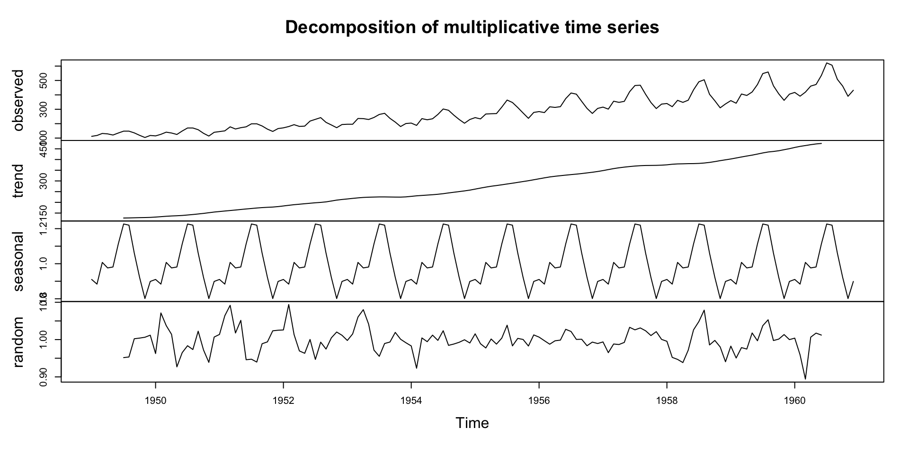
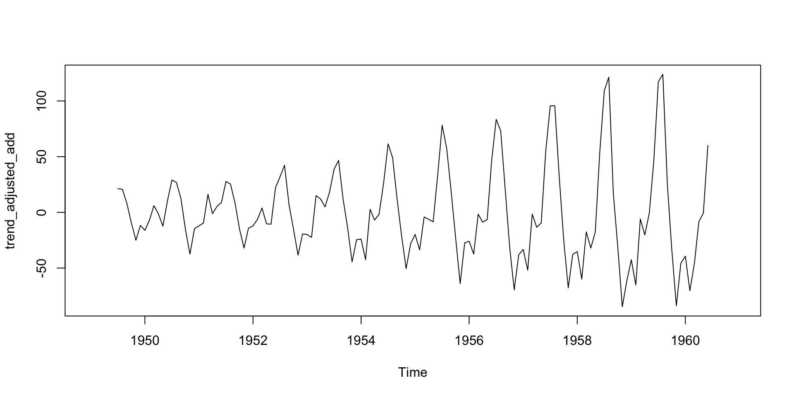
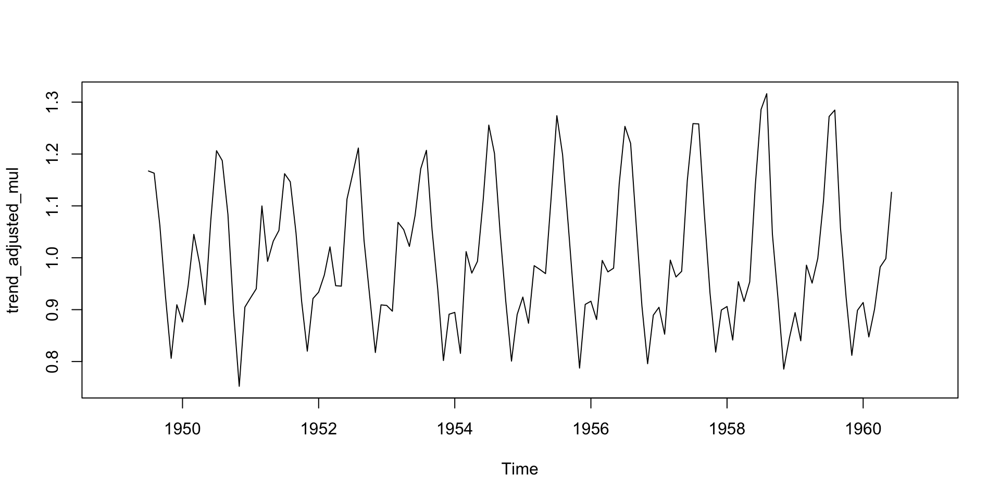
Step 1: Adjusted the data by removing the seasonal component.
Example of additive assumption.
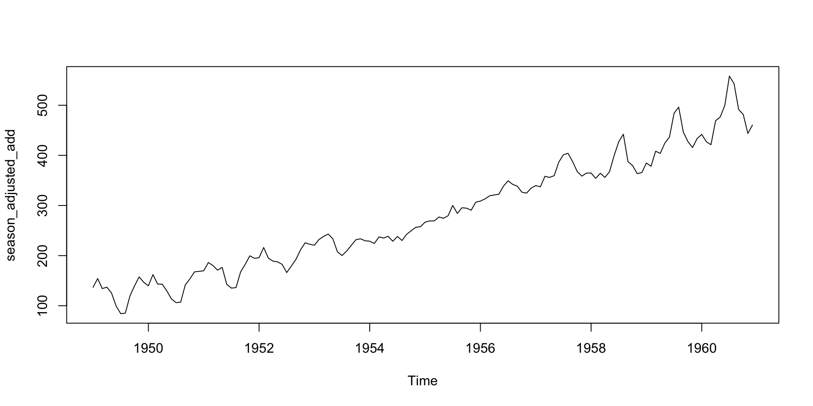
Example of multiplicative assumption.
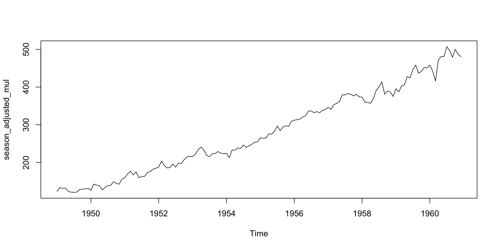
Step 2: Estimate the trend from seasonal adjusted data using linear trend model.
time <- 1:length(season_adjusted_mul)
reg_deaseason <- lm(season_adjusted_mul~time)
summary(reg_deaseason)
Call:
lm(formula = season_adjusted_mul ~ time)
Residuals:
Min 1Q Median 3Q Max
-39.540 -12.230 -0.264 11.303 51.058
Coefficients:
Estimate Std. Error t value Pr(>|t|)
(Intercept) 88.23941 2.82685 31.21 <2e-16 ***
time 2.64614 0.03383 78.23 <2e-16 ***
---
Signif. codes: 0 '***' 0.001 '**' 0.01 '*' 0.05 '.' 0.1 ' ' 1
Residual standard error: 16.87 on 142 degrees of freedom
Multiple R-squared: 0.9773, Adjusted R-squared: 0.9772
F-statistic: 6120 on 1 and 142 DF, p-value: < 2.2e-16Step 3: Determine the seasonal components of the series.
h <- 12
h_time <- (length(season_adjusted_mul)+1):(length(season_adjusted_mul)+h)
length(season_adjusted_mul)[1] 144 [1] 145 146 147 148 149 150 151 152 153 154 155 156Estimated Seasonal Indices
[1] 0.9102304 0.8836253 1.0073663 0.9759060 0.9813780 1.1127758 1.2265555
[8] 1.2199110 1.0604919 0.9217572 0.8011781 0.8988244Step 4: Use linear trend model to estimate the \(\hat{T}_{t+h}\)
Step 5: Forecasting using decomposition method assuming multiplicative effect
forecast_mul <- h_pred * est_si
plot(1:length(data), data, type = "l", col = "blue", lwd = 2,
xlim = c(1, length(data) + h),ylim = range(c(data, forecast_mul)),
xlab = "Time", ylab = "Value", main = "Time Series Data and Forecast")
# Add forecast
lines((length(data) + 1):(length(data) + h),
forecast_mul, col = "red", lwd = 2)
# Add vertical line at forecast start
abline(v = length(data), lty = 2, col = "gray")
# Add legend
legend("topleft", legend = c("Original Data", "Forecast"),col = c("blue", "red"), lwd = 2)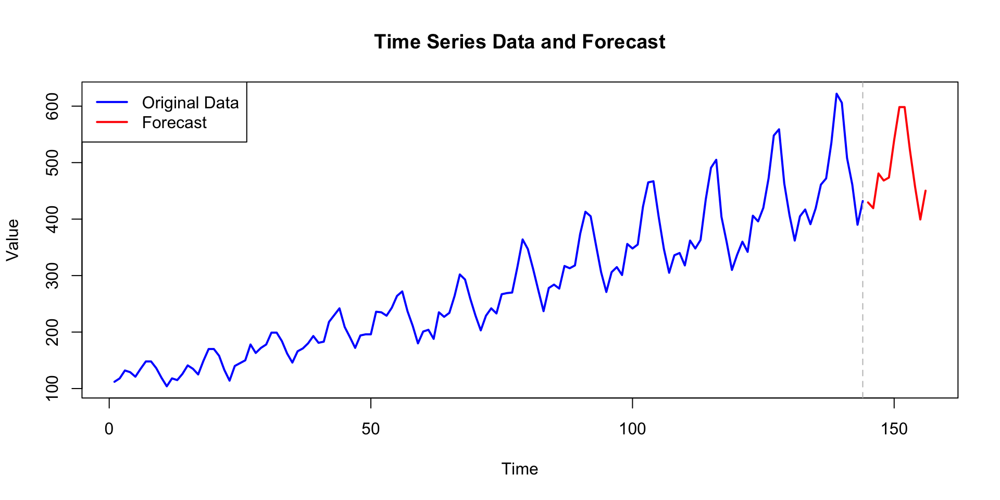
Robust method for decomposing time series data, allowing you to separately analyze the seasonal, trend, and remainder components.
Loess refers to a technique for estimating nonlinear relationships, and the STL method is especially useful because:
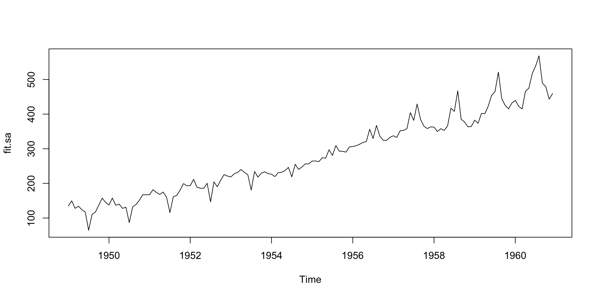
Note:
The STL algorithm is inherently additive, but logging the series converts a multiplicative relationship to an additive one in the log scale. When you back-transform (take exponentials) after decomposing, you retrieve the multiplicative structure for analysis and visualization.
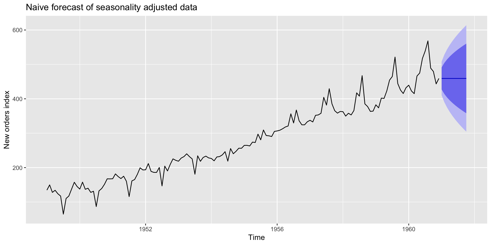
Naive forecast of the seasonally adjusted air passenger data. The forecast then are “reseasonalised” by adding the seasonal naive forecast of the seasonal component.
Use forecast () function applied to the stl object. Need to specify the method being used on the seasonally adjusted data, and the function will do the reseasonalising for you.
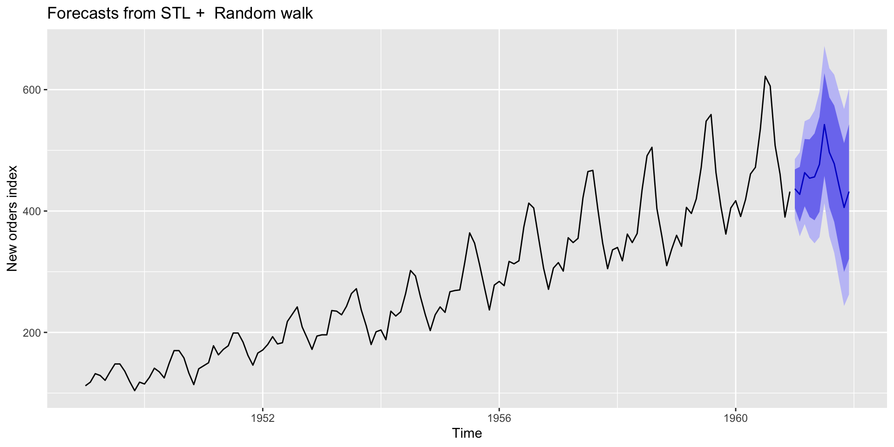
Shortcut approach using stlf() function.
What this function do?
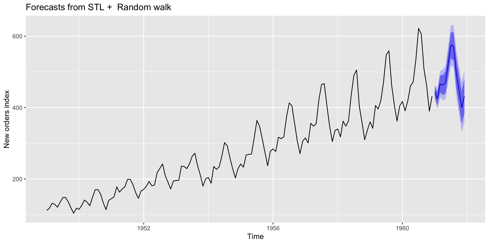
Asmui Rahim, STA572 , Oct 2025